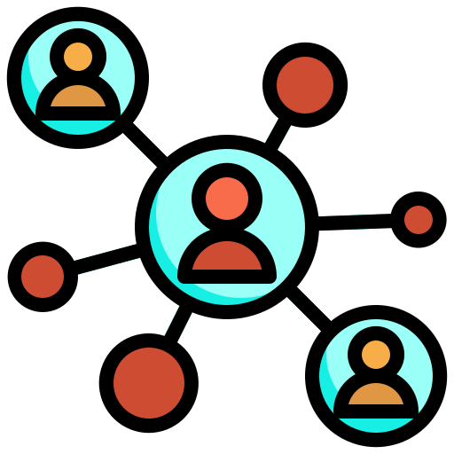

Content
Name
|
안녕하세요! 한국외국어대학교에서 본전공 통계학과 이중전공 컴퓨터공학을 전공하고 있는 백준홍입니다. |
Certificate
| Computer User in the field of spreadsheet and database, Level-I | |
| 컴퓨터활용능력 1급 | |
| Survey Analyst |  |
| 사회조사분석사 2급 | |
| Advanced Data Analytics Semi-Professional(ADSP) | |
| 데이터분석 준전문가 |
Hobby
YouTube
Schedule
| 월 | 화 | 수 | 목 | 금 | |
|---|---|---|---|---|---|
| 1 | No Lecture | 컴퓨팅사고 | 확률분포론 | 데이터베이스 | 확률분포론 |
| 2 | 회귀분석 | ||||
| 3 | 데이터베이스 | 회귀분석연습 | 확률분포론연습 | ||
| 4 | |||||
| 5 | 선형대수 | 웹프로그래밍 | 회귀분석 | ||
| 6 | |||||
| 7 | 선형대수 | 웹프로그래밍 | |||
| 8 | |||||
| 9 |
Lecture
Reference Site
Hufs YouTube Naver GitHub